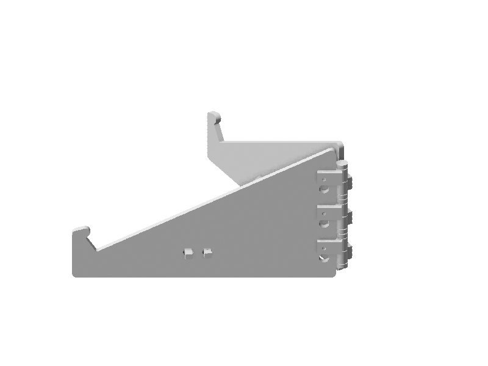
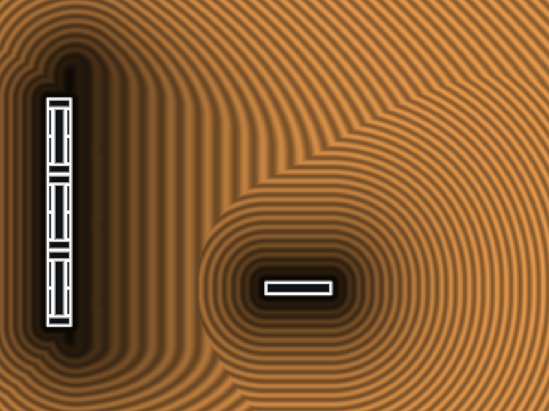

laptop-stand
Drafted with AI, not yet reviewed
by Reiorganisation/laptop-stand.scad
Laptop stand: two laser-cut legs crossed on printed hinges, and a lock that holds them open.
Ported from src/organisation/laptop-stand.scad.
- PART picks the output, as the original’s RENDER does: “all” the assembly, “joint” a hinge laid down for printing, “leg1”, “leg2” and “lock” the 2D cuts, and “sheet” all three laid out on SHEET, its outline scored by keycap/lasercut’s sheet, which the original does not have.
- A leg’s corners are rounded by rounded_polygon, convex ones by ROUNDING and concave ones by 1: the original’s opening and closing, exactly. Its outline is scaled by points::scale, so its field stays exact.
- The lock’s outline, its middle and its teeth, is found by points::union when the script runs; its 2D cut is the original’s opening of it, rounded_polygon’s convex corners, exactly. The 3D lock extrudes the same outline, since a rotate_extrude of a square is a ring’s sector extruded.
- Holes and pins are round where the original’s $fn = 24 makes polygons.
Compared with the original: the parts within 0.014 mm, the assembly by eye.


Files
Source
// SPDX-License-Identifier: 0BSD // // Laptop stand: two laser-cut legs crossed on printed hinges, and a lock // that holds them open. // // Ported from `src/organisation/laptop-stand.scad`. // - PART picks the output, as the original's RENDER does: "all" the // assembly, "joint" a hinge laid down for printing, "leg1", "leg2" and // "lock" the 2D cuts, and "sheet" all three laid out on SHEET, its // outline scored by keycap/lasercut's sheet, which the original does // not have. // - A leg's corners are rounded by rounded_polygon, convex ones by // ROUNDING and concave ones by 1: the original's opening and closing, // exactly. Its outline is scaled by points::scale, so its field stays // exact. // - The lock's outline, its middle and its teeth, is found by points::union // when the script runs; its 2D cut is the original's opening of it, // rounded_polygon's convex corners, exactly. The 3D lock extrudes the // same outline, since a rotate_extrude of a square is a ring's sector // extruded. // - Holes and pins are round where the original's $fn = 24 makes polygons. // // Compared with the original: the parts within 0.014 mm, the assembly by eye. import "keycap/lasercut" as lc; import "keycap/points" as points; // --- Parameters --- const PART = "all"; // "all", "joint", "leg1", "leg2", "lock", "sheet" const SHEET = [270.0, 265.0]; // the material the cuts are laid out on const LAPTOP = [200.0, 300.0, 15.0]; const LAPTOP_TILT = 30.0; // the laptop's angle const LAPTOP_LIFT = 25.0; // how far it is raised off the ground const LEG_ANGLE = 30.0; // half of the angle between the legs const LEG_THICKNESS = 5.0; // the legs' material const LEG_NOTCH_OFFSET = 10.0; // extra length at the front of the notch const LEG_HOLE_OFFSET = 15.0; // from the hinges' axis to the screws const ROUNDING = 4.0; const HOLE_R = 1.5; // screws const HOLE_CAP_R = 4.0; // their heads const HOLE_SPREAD = 6.0; // the screws of the two legs apart const JOINT_H = 24.0; const JOINT_CAP_H = 4.0; const NOZ = 0.4; const E = 0.01; const HALFJOINT_H = (JOINT_H - NOZ) / 2; // --- Calculations --- // The laptop's bottom and front, seen from the side at its tilt const SUPPORT = [cosd(LAPTOP_TILT) * LAPTOP[0], sind(LAPTOP_TILT) * LAPTOP[0]]; const NOTCH = [cosd(90.0 - LAPTOP_TILT) * LAPTOP[2], sind(90.0 - LAPTOP_TILT) * LAPTOP[2]]; const HOLES = [ [LEG_HOLE_OFFSET, LAPTOP_LIFT], [LEG_HOLE_OFFSET, LAPTOP_LIFT + SUPPORT[1] / 3], [LEG_HOLE_OFFSET, LAPTOP_LIFT + SUPPORT[1] * 2 / 3], ]; // --- Legs --- // A leg's outline before it is widened for the legs' angle fn leg_points() { let s = global::SUPPORT; let n = global::NOTCH; let lift = global::LAPTOP_LIFT; let front = s[0] + n[0]; [ [0.0, 0.0], // origin [front + global::LEG_NOTCH_OFFSET, 0.0], // front, bottom [front + global::LEG_NOTCH_OFFSET, lift + n[1] * 3 / 2], // notch, front top [front - global::LEG_NOTCH_OFFSET, lift + n[1] * 2], // notch, back top [front, lift + n[1]], // notch, back middle [s[0], lift], // notch, back bottom [0.0, s[1] + lift], // back, top ] } // A leg with its holes: `hole_offset` moves the screws up and their heads' // recesses down, apart on the two legs. fn leg_2d(hole_offset) { // Seen square to the leg, which leans out by LEG_ANGLE let outline = points::scale(leg_points(), [1 / cosd(global::LEG_ANGLE), 1.0]); let base = rounded_polygon(outline, global::ROUNDING, #{concave: 1.0}); let holes = []; for hole in global::HOLES { let x = hole[0] - global::LEG_THICKNESS; holes.push(circle(global::HOLE_R).move([x, hole[1] + hole_offset])); holes.push(circle(global::HOLE_CAP_R).move([x, hole[1] - hole_offset])); } // Where the lock's teeth go through let lock_at = global::SUPPORT[0] * 2 / 3; for side in [-1.0, 1.0] { holes.push(circle(global::HOLE_CAP_R).move([lock_at + side * global::HOLE_CAP_R * 2, global::LAPTOP_LIFT])); } base.difference(union(holes)) } // A leg standing up, its thickness along Y, as the assembly has it fn leg(hole_offset) { leg_2d(hole_offset) .extrude(global::LEG_THICKNESS) .rotate_xyz([90, 0, 0]) .move([global::LEG_THICKNESS, 0, 0]) } // --- Lock --- // The radii of the lock's teeth: one pair inside the legs' recesses, one // outside fn lock_radii() { let at = global::SUPPORT[0] * 2 / 3 + global::LEG_THICKNESS; [at - global::HOLE_CAP_R * 2, at + global::HOLE_CAP_R * 2] } // The lock's middle, between the legs, from the inner teeth to the outer fn lock_middle() { let r = lock_radii(); let a = global::LEG_ANGLE; [ [cosd(a) * r[0] * 0.93, sind(a) * r[0] * 0.93], [cosd(a) * r[1] * 1.07, sind(a) * r[1] * 1.07], [cosd(a) * r[1] * 1.07, -sind(a) * r[1] * 1.07], [cosd(a) * r[0] * 0.93, -sind(a) * r[0] * 0.93], ] } // A tooth: the part of a ring of radius `r`, `width` across, from angle // `a0` to `a1`, as points, its ends radial and its sides arcs. fn tooth(r, width, a0, a1) { let ri = r - width / 2; let ro = r + width / 2; [ [ri * cosd(a0), ri * sind(a0)], [ro * cosd(a0), ro * sind(a0), #{arc: ro}], [ro * cosd(a1), ro * sind(a1)], [ri * cosd(a1), ri * sind(a1), #{arc: -ri}], ] } // The lock's outline: its middle and four teeth reaching a tenth of the // legs' angle beyond the legs, as the original's rotate_extrude makes // them. fn lock_outline() { let a = global::LEG_ANGLE; let span = a * 2 * 0.1; let width = global::HOLE_CAP_R * 1.5; let outline = lock_middle(); for r in lock_radii() { outline = points::union(outline, tooth(r, width, a, a + span)); outline = points::union(outline, tooth(r, width, -a - span, -a)); } outline } // The original's cut opens the lock's outline by 1: its convex corners // rounded, its concave ones sharp. let lock_points = lock_outline(); let lock_2d = rounded_polygon(lock_points, 1.0, #{concave: 0}); let lock = polygon(lock_points) .extrude(LEG_THICKNESS) .move([0, 0, LAPTOP_LIFT]); // --- Joint --- // The arm of a hinge that a leg is screwed to, and the brace beside it fn joint_attachment() { let t = global::LEG_THICKNESS; let h = global::HALFJOINT_H; let length = global::LEG_HOLE_OFFSET + h / 2; let screw = cylinder(global::HOLE_R, t + global::E) .rotate_xyz([90, 0, 0]) .move([global::LEG_HOLE_OFFSET / 2 - h / 4, 0, 0]); let arm = cuboid([length, t, h]).difference(screw).move([length / 2, 0, 0]); let brace = cuboid([t, t, h]) .difference(cylinder(t - global::E, h + global::E).move([-t / 2, -t / 2, 0])) .move([t / 2, -t, 0]); union(arm, brace) } // A hinge: a sleeve split in two, a pin with caps, and an arm on each half // `angle` apart fn joint(angle) { let t = global::LEG_THICKNESS; let sleeve = cylinder(t, global::JOINT_H).difference(union( cuboid([t * 2, t * 2, global::NOZ]), cylinder(t / 2 + global::NOZ, global::JOINT_H + global::E), )); let pin_h = global::JOINT_H + global::NOZ * 2; let cap_z = (pin_h + global::JOINT_CAP_H) / 2; let pin = union( cylinder(t / 2, pin_h + global::E), cylinder(t, global::JOINT_CAP_H).move([0, 0, cap_z]).symmetric_z(), ); let arm_z = (global::HALFJOINT_H + global::NOZ) / 2; let top = joint_attachment().move([0, t * 1.5, arm_z]).rotate_z(angle); let bottom = joint_attachment().move([0, t * 1.5, -arm_z]).rotate_z(angle).reflect_y(); union(sleeve, pin, top, bottom) } // --- Assembly --- let legs = union( leg(HOLE_SPREAD).move([0, LEG_THICKNESS / 2, 0]).rotate_z(LEG_ANGLE), leg(-HOLE_SPREAD).move([0, -LEG_THICKNESS / 2, 0]).rotate_z(-LEG_ANGLE), ); let joints = union(HOLES.map(|hole| joint(LEG_ANGLE).move([0, 0, hole[1]]))); let assembly = union(legs, joints, lock); // --- Output --- if PART == "all" { draw(assembly); } else if PART == "joint" { draw(joint(90).rotate_xyz([0, -90, 0])); } else if PART == "leg1" { draw(leg_2d(HOLE_SPREAD)); } else if PART == "leg2" { draw(leg_2d(-HOLE_SPREAD).reflect_y()); } else if PART == "lock" { draw(lock_2d); } else if PART == "sheet" { draw(lc::sheet(SHEET), #{role: "score"}); draw(leg_2d(HOLE_SPREAD).move([5, 5])); draw(leg_2d(-HOLE_SPREAD).reflect_y().move([5, 260])); draw(lock_2d.move([140, 180])); }